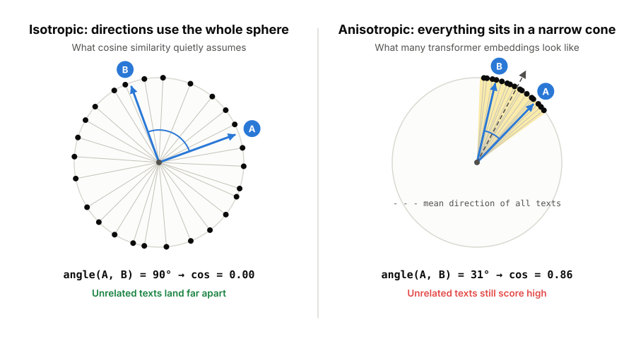
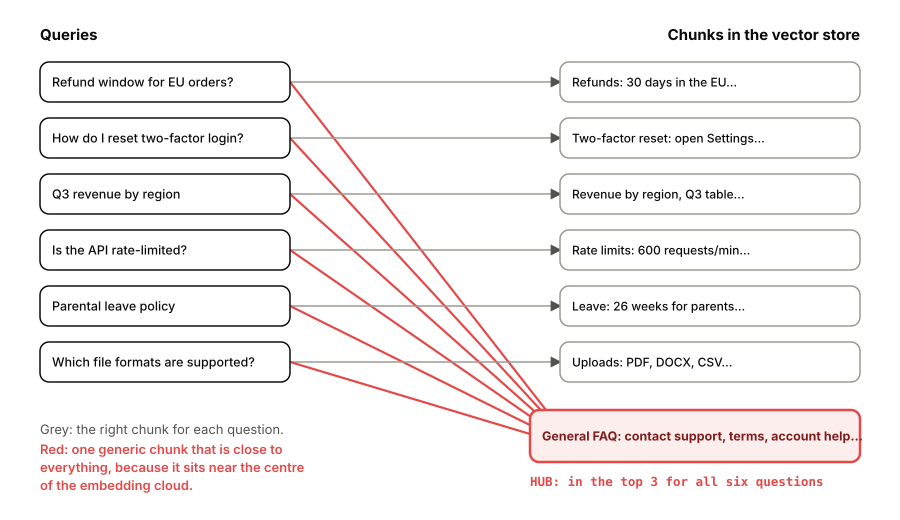

Compare the word "dog" with 1,000 common English words. With OpenAI's text-embedding-ada-002, every score lands between 0.75 and 0.88, including words that have nothing to do with dogs. With text-embedding-3-small, most of the same scores fall between 0.2 and 0.4, and the best match peaks at 0.68. Same words, same metric, very different numbers. Older models are stranger still: in GPT-2's last layer, two randomly chosen words have, in one researcher's words, "almost perfect cosine similarity".
Cosine similarity is not broken. It measures exactly what it promises: the angle between two vectors. The trouble is an assumption that comes with it, that directions in the embedding space are spread out evenly, so a small angle means shared meaning. Many embedding spaces break that assumption. Their vectors crowd into a narrow cone, and a few points become hubs that look similar to everything. This article explains both effects, shows what they do to semantic search and retrieval-augmented generation (RAG), and covers the fixes, from free per-model calibration to whitening and hubness-aware scoring.
What cosine similarity measures
Cosine similarity divides the dot product of two vectors by their lengths, so it ignores length and keeps only direction:
cos(a, b) = a·b / (‖a‖ ‖b‖)
A score of 1 means the same direction, 0 means perpendicular and −1 means opposite. Most embedding APIs return unit-length vectors, and then cosine similarity, the dot product and Euclidean distance all rank results identically, because ‖a − b‖² = 2 − 2 cos(a, b). Switching metrics in a vector database does not escape the problem below.
The quiet assumption is isotropy: no direction in the space is special. In high dimensions, random directions are almost perpendicular. Two random unit vectors in 768 dimensions have a cosine near 0, with a standard deviation of about 1/√768 ≈ 0.036. In an isotropic space, unrelated texts would score close to zero, and anything clearly above zero would signal shared meaning. Real embedding spaces often look different.

The narrow cone
Researchers measured this cone from several directions.
- Word embeddings in language models. Gao and colleagues (ICLR 2019) found that when language models are trained by maximising likelihood with tied input and output embeddings, "most of the learnt word embeddings tend to degenerate and be distributed into a narrow cone". They named it the representation degeneration problem.
- Contextual embeddings. Ethayarajh (EMNLP 2019) showed that representations from ELMo, BERT and GPT-2 "are not isotropic in any layer". In GPT-2, two random words had an average cosine of about 0.6 in layers 2 to 8, rising to almost 1 in the last layer. Higher layers were generally more anisotropic than lower ones.
- Not only language. Godey, de la Clergerie and Sagot (EACL 2024) found the same effect in models trained with objectives that should not cause it, and in Transformers trained on other modalities, and concluded that "anisotropy is actually inherent to Transformers-based models".
- Even static vectors. Mu and Viswanath (ICLR 2018) showed that word2vec and GloVe vectors share a large common mean and a few dominant directions, and that those directions "encode the frequency of the word to a significant degree".
Why a shared direction inflates every score
Picture each embedding as two parts: a component c that all texts share, and a part s that carries the text's own meaning. For two unrelated texts the meaning parts are perpendicular, but both vectors still contain c.
![Vector sketch. A long black arrow c, the shared part, points right. From its tip, a short meaning vector s_A points up and another, s_B, points into the page, at a right angle to each other. The full embeddings A equals c plus s_A and B equals c plus s_B are drawn in blue and point in similar directions. Beside it, the formula: cos of A and B equals the squared length of c plus s_A dot s_B, over the squared length of c plus the squared length of s. With the length of c 2, the length of s 1, and the parts perpendicular, cos equals 4 over 5, 0.80. The score measures c, not meaning.](images/shared-m.svg)
When the meaning parts are perpendicular to c and equally long, the cosine works out to (‖c‖² + sA·sB) / (‖c‖² + ‖s‖²). For unrelated texts the dot product of the meaning parts is zero, which leaves a floor of r² / (r² + 1), where r is the length of the shared part relative to the meaning part. At r = 1 the floor is 0.5, at r = 2 it is 0.8, at r = 3 it is 0.9. Identical texts still score 1, so all of the useful variation is squeezed into the thin band between the floor and 1.
Two practical problems follow.
- Absolute thresholds do not travel. "Keep chunks above 0.8" is strict for one model and lets almost everything through for another, and it silently changes meaning when you upgrade models.
- The shared part is not constant. If its strength varies from text to text, as the frequency-linked directions in real models do, that variation is noise, and noise can reorder results.
The simulation below shows both. Each text is a 128-dimensional vector: a meaning part plus a shared direction whose strength varies by about 30% from text to text. Related pairs share 70% of their meaning; unrelated pairs share none. The dashed line is a fixed 0.8 threshold.
Turn the shared direction up and the scores of unrelated pairs climb towards the threshold, so a fixed 0.8 cut-off stops separating anything. Subtracting the mean puts unrelated pairs back near zero, but ranking accuracy, how often a related pair outscores an unrelated one, stays down: the varying strength is still there. Removing the top direction takes it out, and both the scale and the ranking recover. That is the difference between centring and the next step in the fixes below.
What the cone costs
Sentence-similarity benchmarks measure the damage directly. They ask how well the cosine between two sentence embeddings agrees with human similarity ratings. SimCSE, a widely used 2021 method, reports a set of models on the same seven benchmarks, which makes for a clean comparison.
Show the data
| Model | What changed | Avg. Spearman × 100 |
|---|---|---|
| GloVe embeddings (averaged) | 2014 static word vectors | 61.32 |
| BERT-base (first-last average) | Raw contextual embeddings | 56.70 |
| BERT-base + flow | Mapped to an isotropic Gaussian after training | 66.55 |
| BERT-base + whitening | Centred, decorrelated and rescaled after training | 66.28 |
| Unsupervised SimCSE (BERT-base) | Contrastive training, no labels | 76.25 |
| Supervised SimCSE (BERT-base) | Contrastive training on labelled pairs | 81.57 |
Raw BERT embeddings did worse than averaged GloVe vectors from 2014. The Sentence-BERT authors had already noticed this with plain averaged BERT embeddings (54.81 against GloVe's 61.32) and the BERT [CLS] vector (29.19). Two fixes applied after training, without new data, each recovered about 10 points: BERT-flow, which maps embeddings to an isotropic Gaussian, and whitening, covered below.
Contrastive training did best. It pulls matching pairs together and pushes everything else apart. Wang and Isola (ICML 2020) showed that this objective optimises two properties: alignment, matching pairs land close together, and uniformity, all embeddings spread evenly over the sphere. The SimCSE authors showed that their objective makes the anisotropic space "more uniform". Most modern embedding models are trained contrastively, which is consistent with the wider spread of text-embedding-3-small in the opening example, though none is perfectly isotropic.
One caution: more isotropy is not always better. Rudman and Eickhoff (ICLR 2024) found that decreasing isotropy during fine-tuning improved performance on most tasks and models they tested, and argued that average cosine similarity is a flawed way to measure isotropy. Tsukagoshi and Sasano (ACL Findings 2025) found that embeddings produced for classification and clustering are less isotropic than those for retrieval and similarity. Steck, Ekanadham and Kallus at Netflix (WWW 2024) went further and showed that in regularised linear models cosine similarity "can yield arbitrary and therefore meaningless" results, depending on training choices. Within one model, ranking by cosine often works. It breaks when you trust absolute values, compare across models, or when dominant directions carry information that has nothing to do with meaning. Measure on your own data rather than assuming.
Hubness: when some points are close to everything
The second effect is about neighbours rather than scores. Count, for each point, how many other points list it among their k nearest neighbours. On average the count is exactly k. Radovanović, Nanopoulos and Ivanović (JMLR 2010) showed that as dimensionality grows, this count becomes skewed: a few hubs appear in many neighbour lists, and many anti-hubs appear in none. They also found that "points closer to the mean tend to become hubs". In a cone, the centre of the cone is the mean, so texts that sit close to the average become everyone's neighbour.
In the simulation, 300 random points stand in for a document collection, and each point lists its 10 nearest neighbours. On an evenly spread sphere, the biggest hub stays at about twice the average even at 300 dimensions. In a lopsided cloud, with a mean offset and a few dominant directions, it grows from under twice the average at 3 dimensions to five times the average at 100, and a few points become nobody's neighbour. Subtracting the mean barely helps, because the dominant directions remain. Re-ranking with CSLS, a hubness-aware score described below, cuts the biggest hub by roughly 40%.
In a RAG system, generic text is the natural hub: headers, disclaimers and boilerplate FAQ answers sit near the centre of the cloud and ride along with unrelated questions, using up context and diluting the answer.

Hubs can also be planted. In work accepted at IEEE S&P 2026, Zhang and colleagues built an adversarial hub for a text-to-image retrieval system using only 100 random queries. It was the top result for more than 21,000 of 25,000 test queries; the most common natural hub topped only 102. Existing defences against natural hubness did not stop hubs aimed at specific concepts. Defences are arriving. hubscan (Habler and colleagues, 2026) flags hubs with 90% recall at an alert budget of 0.2% and works with FAISS, Pinecone, Qdrant and Weaviate. An admission-time gate (Pathak and Sharma, June 2026) scores every new document against sentinel queries before it enters the index, catching at least 92% of hubs across its tested range with 1% false positives and about 3% extra ingestion time. Notably, a per-topic version of the gate gave "no reliable benefit", which the authors attribute to anisotropy.
Fixes, cheapest first
- Calibrate per model. Embed a few thousand random pairs from your own corpus and record the score distribution for pairs you know are unrelated. Set thresholds as percentiles or z-scores of that baseline, not as raw numbers, and redo it whenever you change models.
- Centre and remove dominant directions. Subtract the corpus mean from every vector, then remove the projection onto the top few principal directions. Mu and Viswanath suggest about d/100 directions, so 3 for 300-dimensional vectors. Apply the same transform to queries.
- Whiten. Su and colleagues (2021) estimate the mean μ and covariance Σ = UΛUᵀ on the corpus and transform each vector as (x − μ) UΛ−1/2. This decorrelates the dimensions and gives them equal variance. Keeping only the first k columns also shrinks the index; about a third of the original size was near optimal, 256 for BERT-base. Fit on enough data, because whitening also amplifies low-variance noise, and check the result on your own evaluation queries.
- Re-rank with a hubness-aware score. Conneau and colleagues (ICLR 2018) introduced CSLS: 2 cos(q, d) − rD(q) − rQ(d), where r is a point's mean cosine to its K nearest neighbours on the other side. Documents that are close to everything get penalised. Precompute r for documents offline and apply it to the top 100 or so candidates.
- Monitor retrieval counts. Log how often each chunk appears in the top k. A chunk retrieved for many unrelated questions is a hub: rewrite it, split it or demote it, and screen new documents at ingestion.
- Prefer contrastively trained embedding models, and evaluate them on your own queries. Benchmark scores do not tell you what 0.8 means in your corpus.
The first four fixes fit in a few lines of NumPy:
import numpy as np
def unit(X):
return X / np.linalg.norm(X, axis=1, keepdims=True)
# 1. Baseline: what does "unrelated" score in this model, on this corpus?
def unrelated_baseline(E, n=5000, seed=0):
rng = np.random.default_rng(seed)
i, j = rng.integers(0, len(E), (2, n))
s = np.sum(unit(E[i]) * unit(E[j]), axis=1)
return s.mean(), s.std() # threshold = mean + z * std
# 2-3. Fit once on the corpus; apply the same transform to queries.
def fit_whitening(E, k=None):
mu = E.mean(axis=0)
U, lam, _ = np.linalg.svd(np.cov((E - mu).T))
W = U / np.sqrt(lam + 1e-8) # U @ diag(lam ** -0.5)
return mu, (W[:, :k] if k else W)
def whiten(X, mu, W):
return unit((X - mu) @ W)
# 4. CSLS re-ranking of the candidates for one query.
def csls(q, D, r_docs, K=10):
sims = D @ q # all unit vectors
r_q = np.sort(sims)[-K:].mean() # query's mean similarity to its K nearest docs
return 2 * sims - r_q - r_docs # r_docs precomputed per doc against sample queriesThe angle is honest; the reading is ours
Cosine similarity reports the angle between two vectors, and that angle is real. What misleads is the reading we bring to it: that 0.8 means "similar" in every model, that the space is evenly used, and that neighbours are equally likely to be anyone's. Transformers pack their embeddings into a cone, high dimensions turn a few central points into hubs, and both effects travel straight into semantic search and RAG.
The fixes are well understood and mostly cheap: know each model's baseline, remove what every vector shares, re-rank with an eye on hubs, and watch which chunks keep showing up. Contrastive training has made modern embedding models far better behaved than raw BERT, but a score still has to be read against the model and the corpus that produced it.
Sources (current to October 2026)
- Pamela Fox, A visual exploration of vector embeddings (May 2025): the "dog" comparison against 1,000 common words for
text-embedding-ada-002andtext-embedding-3-small. - Ethayarajh, How Contextual are Contextualized Word Representations? (EMNLP 2019): anisotropy across layers of ELMo, BERT and GPT-2.
- Gao et al., Representation Degeneration Problem in Training Natural Language Generation Models (ICLR 2019): the narrow cone.
- Godey, de la Clergerie and Sagot, Anisotropy Is Inherent to Self-Attention in Transformers (EACL 2024).
- Mu, Bhat and Viswanath, All-but-the-Top: Simple and Effective Postprocessing for Word Representations (ICLR 2018): common mean, dominant directions and word frequency.
- Gao, Yao and Chen, SimCSE: Simple Contrastive Learning of Sentence Embeddings (EMNLP 2021): source of Figure 3 (Table 5).
- Reimers and Gurevych, Sentence-BERT (EMNLP 2019): averaged BERT and
[CLS]embeddings against GloVe. - Li et al., On the Sentence Embeddings from Pre-trained Language Models (EMNLP 2020): BERT-flow.
- Su et al., Whitening Sentence Representations for Better Semantics and Faster Retrieval (2021).
- Wang and Isola, Understanding Contrastive Representation Learning through Alignment and Uniformity on the Hypersphere (ICML 2020).
- Rudman and Eickhoff, Stable Anisotropic Regularization (ICLR 2024).
- Tsukagoshi and Sasano, Redundancy, Isotropy, and Intrinsic Dimensionality of Prompt-based Text Embeddings (ACL Findings 2025).
- Steck, Ekanadham and Kallus, Is Cosine-Similarity of Embeddings Really About Similarity? (WWW 2024 Companion).
- Radovanović, Nanopoulos and Ivanović, Hubs in Space: Popular Nearest Neighbors in High-Dimensional Data (JMLR 2010).
- Conneau et al., Word Translation Without Parallel Data (ICLR 2018): CSLS.
- Zhang et al., Adversarial Hubness in Multi-Modal Retrieval (IEEE S&P 2026).
- Habler et al., Adversarial Hubness Detector: Detecting Hubness Poisoning in Retrieval-Augmented Generation Systems (February 2026).
- Pathak and Sharma, When Global Gating Is Enough: Admission-Time Hubness Control in Anisotropic Vector Retrieval Systems (June 2026).
Figure 3 re-plots numbers published in SimCSE's Table 5. The two interactive figures are simulations on synthetic random vectors that illustrate the mechanisms; they are not measurements of any real embedding model. The 2026 papers are preprints except where a venue is named; their figures are as reported in their abstracts.